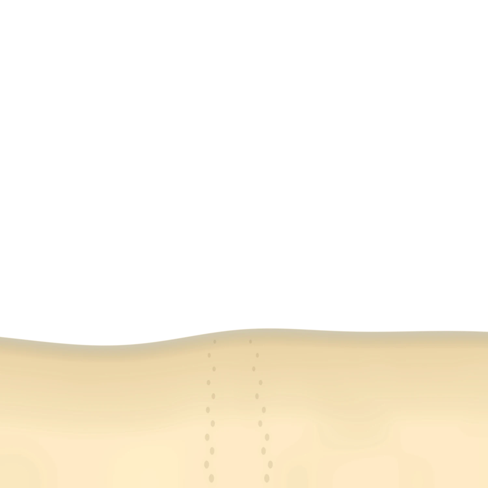

さいけうとゆいちゃんの
ふ
た
り
の
島
ぐ
ら
し
5
泊
6
日
誕
生
日
旅
行
OKINAWA 2026.11.19 — 11.24
…
さいけう
ゆいちゃん
しおり
スタンプ
日記
アルバム
ずかん
リザルト
ログアウト
さいけうとゆいちゃんの
ふ
た
り
の
島
ぐ
ら
し
5
泊
6
日
誕
生
日
旅
行
OKINAWA 2026.11.19 — 11.24
タップしてはじめる


 さいけう
さいけう ゆいちゃん
さいけうゆいちゃん
ゆいちゃん
さいけうゆいちゃん